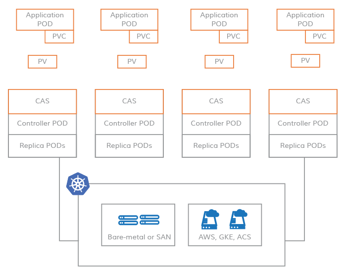
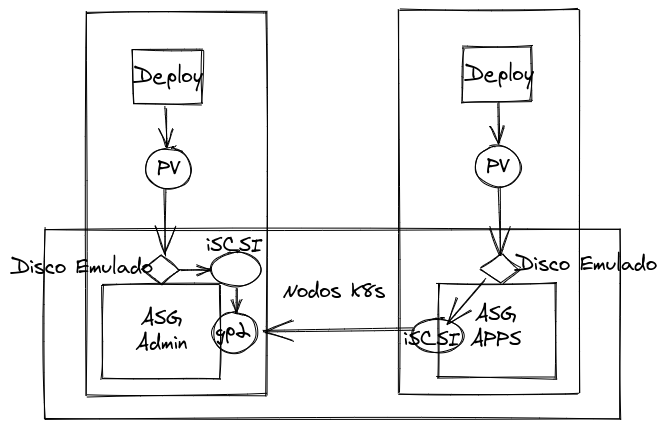

En AWS se recomienda repartir las cargas de trabajo en las AZ disponibles de la región. Por ejemplo, si se tiene un grupo de instancias en la región de Irlanda, es recomendable que este pueda levantar instancias en las zonas a, b y c.
Por otro lado, no es posible usar los discos de AWS (EBS) en más de una AZ. Es decir, si tienes un ASG con una instancia en la zona a y un disco y esa zona cae, aunque la instancia se podrá levantar en la zona b, podrá enlazar el disco.
Se podría argumentar que no es un problema, debido a que un sistema de ficheros distribuido no suele ser necesario. Y para cuando lo es, hay soluciones cómo EFS (NFS de toda la vida pero con «Elástico» en el nombre para ser moderno) o FSx para Windows Server.
Pero seria un argumento pobre. EFS (NFS) no es un sistema de ficheros de verdad (no soporta las mismas órdenes del kernel que un sistema de ficheros normal) y es caro (en el articulo se argumenta que hasta 10x más). Debido a que no es un sistema de ficheros de verdad, hay muchos componentes que necesitan escribir datos en disco que o no soportan NFS o no se recomienda. Véase Prometheus, MySQL o MongoDB. Evidentemente, FSx no es relevante.
Para visualizar el problema, supongamos el siguiente escenario. Tenemos un cluster de EKS con un ASG en la región de Irlanda, con soporte para las 3 zonas y tenemos dos nodos que está cada uno en una AZ. Creamos un despliegue con un PVC asociado, que caerá en la zona que sea. Se despliega correctamente y somos felices. Ahora, resulta que hay una incidencia en esa zona, por lo que k8s redistribuye la carga. Pero el pod no arranca, en vez de estar en estado «Running», se queda en «Pending». En la descripción de este vemos node(s) had volume node affinity conflict.
Para emularlo, pondremos un cordon en el nodo en el que esté el pod desplegado y borraremos el pod, para forzar que vaya al nodo de la zona b.
# Se presupone que el terraform está aplicado. Mirar última página para ver el código
node=$(kubectl get pod -l estado=triste -o json | jq -r '.items[0].spec.nodeName')
kubectl cordon $node
pod=$(kubectl get pod -l estado=triste -o json | jq -r '.items[0].metadata.name')
kubectl delete pod $pod
OpenEBS soluciona muchos problemas, pero este en concreto es el que intentaremos solucionar: Cómo tener discos usables en distintas AZ en Kubernetes desplegado en AWS.
¿Si no nos tenemos que preocupar de que un pod esté en la zona a o b, por que nos tenemos que preocupar que un disco esté en la zona a o b?
La gestión de discos sigue siendo un problema que Kubernetes no entiende. De la misma forma que puede crear balanceadores en muchos proveedores, la gestión de los discos no está estandarizada. No existe un recurso que sea «disco» y que funcione mágicamente en AWS y en GCP.
Una primera aproximación a este problema son los StorageClass, pero en cada proveedor funcionan diferente. En AWS por defecto se llama gp2 y usa aws-ebs. Pero en GCP se llama standard y usa gce-pd.
Dejaremos de preocuparnos con esto cuando se use el estándar CSI (Container Storage Interface). Una parte de la especificación (buscar por TopologyRequirement) contempla la MultiAZ.
«OpenEBS construye en kubernetes para permitir a aplicaciones con estado acceder facilmente a Volúmens Físicos replicados o locales. Usando el patrón Container Attached Storage (Almacenamiento Enlazado al Contenedor) se consigue menor coste, mayor facilidad de operación y mayor control.»
En el patrón CAS el dato está lo más cerca posible a la aplicación, siendo gestionado como un microservicio. De esta forma se desacopla los datos de los nodos.

Las posibilidades son:
Aquí hay una tabla para ayudar a escoger cual es el mejor backend.
Veremos un ejemplo con el backend Jiva. El proceso es:
node=$(kubectl get pod -l estado=contento -o json | jq -r '.items[0].spec.nodeName')
echo $node
kubectl cordon $node
pod=$(kubectl get pod -l estado=contento -o json | jq -r '.items[0].metadata.name')
kubectl delete pod $pod
kubectl get pod -l estado=contento -o json | jq -r '.items[0].spec.nodeName'
Si todo ha ido bien, el pod se recreará sin problemas.
La clave de todo es que usa iSCSI (internet Small Computer System Interface). Provee acceso a dispositivos de almacenamiento a nivel de bloque a través de la red, a diferencia de NFS que lo hace a nivel del sistema de ficheros.
El protocolo permite a los clientes enviar órdenes a los dispositivos y crea la ilusión de que los discos están enlazados en local (aparecen en /dev/sdx).
Teoricamente, NFS y iSCSI se parecen, ambos son protocolos para compartir datos. La diferencia es que NFS no soporta las mismas órdenes del kernel que un sistema de ficheros normal. Por ello, en ciertas ocasiones, simplemente no sirve.
Se suele decir que NFS es más lento, pero parece ser que en lo que al protocolo se refiere, la velocidad no es un problema.
En resumen, OpenEBS funciona por que los discos see montan a nivel de red, no se montan gp2 literalmente en el panel de AWS.

En este caso, MultiAZ quiere decir que se puede usar desde más de una AZ, pero no que haya alta disponibilidad de AZ. Para hacerlo, habría que tener varias replicas del mismo disco en estas AZ. Esto se configura en el StorageClass:
apiVersion: storage.k8s.io/v1
kind: StorageClass
metadata:
name: openebs-jiva-gpd-3repl
annotations:
openebs.io/cas-type: jiva
cas.openebs.io/config: |
- name: ReplicaCount
value: "3"
...
provisioner: openebs.io/provisioner-iscsi
Para conseguir que cada copia esté en una AZ se puede anti-afinidades, de la misma forma que se usaria con un despliegue. En esta tabla se pueden consultar todos los parámetros de configuración.
Al añadir más replicas, se consigue que el deploy pvc-#-rep-# tenga más de un pod. Estos pods se usan para sincronizar los discos de un nodo a otro.
OpenEBS es un servicio que permite a k8s tener discos. Pero para poder ofrecerlos, tiene que tenerlos disponibles. Desde k8s solo se configura la ruta en la que guardar los datos:
kind: StoragePool
apiVersion: openebs.io/v1alpha1
metadata:
name: openebs-jiva-poc
spec:
path: /mnt/openebs/
La presentación está disponible aquí. Y el código de la POC, aquí.
{kind=link}